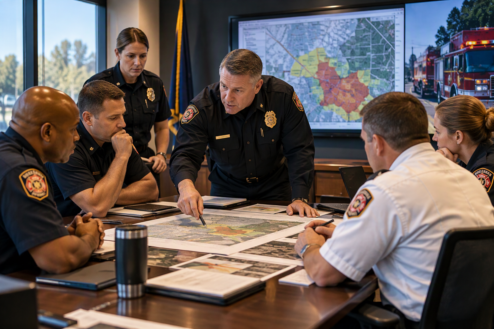

About Solis
Practical guidance, thoughtful leadership, and strategies designed for the realities of public safety.
A Practical Partner for Public Safety
Solis Public Safety Group was built to help fire, emergency-service, and public-safety organizations strengthen leadership, clarify priorities, and move important initiatives forward.
Our consulting approach is collaborative and practical. We listen first, define the problem clearly, and develop recommendations that leaders can actually use.
- Public-safety focused
- Leadership centered
- Collaborative and independent
- Built around practical implementation
